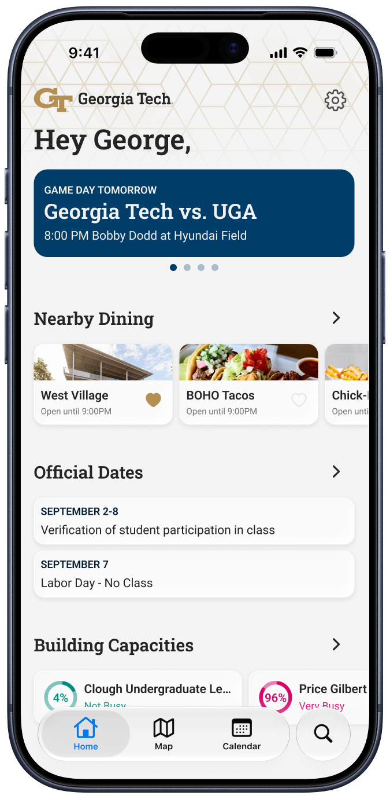
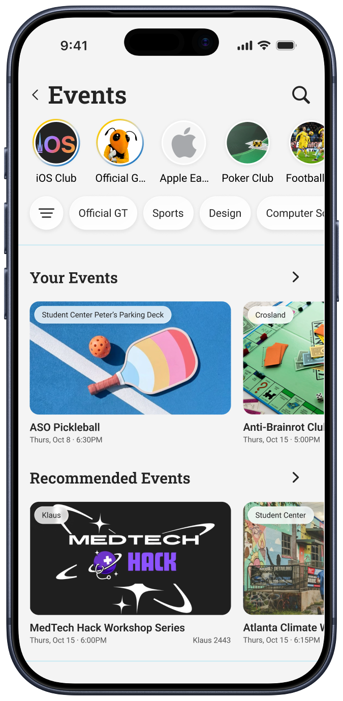
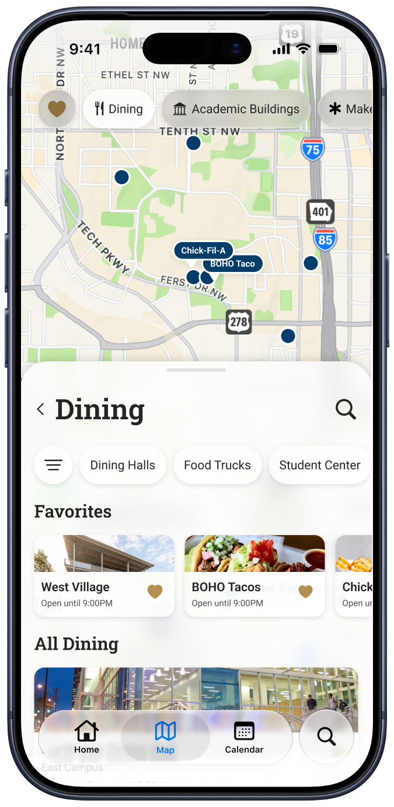
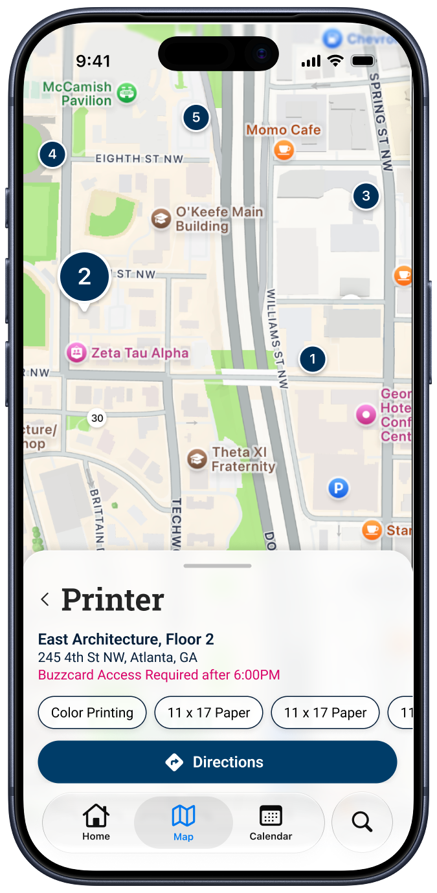

10 months
Jan '26 - Present
Beta Fall '26, launch Spring '27
Lead Sr. UX Designer
1 Lead UX Designer
8 Jr UX Designers
2 Tech Leads
6 Sr Developers
20 Jr Developers
Figma
Claude
XCode
Github
The Project
Launching the official Georgia Tech App, combining eight apps into one, all-in-one app for 50K+ students. As lead designer, I led the design and development of the app.
The Problem:
A typical day in a student’s life is spread across eight different apps.
The Outcome:
One official Georgia Tech App with a student’s entire user journey: dates, dining, bus routes, course scheduling and organization events.
Why is it innovative?
The Georgia Tech App brings a typical day in the life of a student across eight different apps into one single app. As lead designer, I led the design and development of the new official Georgia Tech App, which will contain a student’s entire user journey in one app.
How does it improve a person’s life?
Students and staff can access official dates, dining menus, bus routes, course scheduling, and organization events in one app. Additionally, the Georgia Tech App utilizes a new, AI-assisted way of tracking bus driver breaks and crowd sourcing menu accuracy.
What did I learn?
As the lead designer of this 0→1 project, I learned how to lead 8 junior designers, speak about design decisions to developers, and collaborate with legal, PMs, developers, and official Georgia Tech orgs.
Gallery




